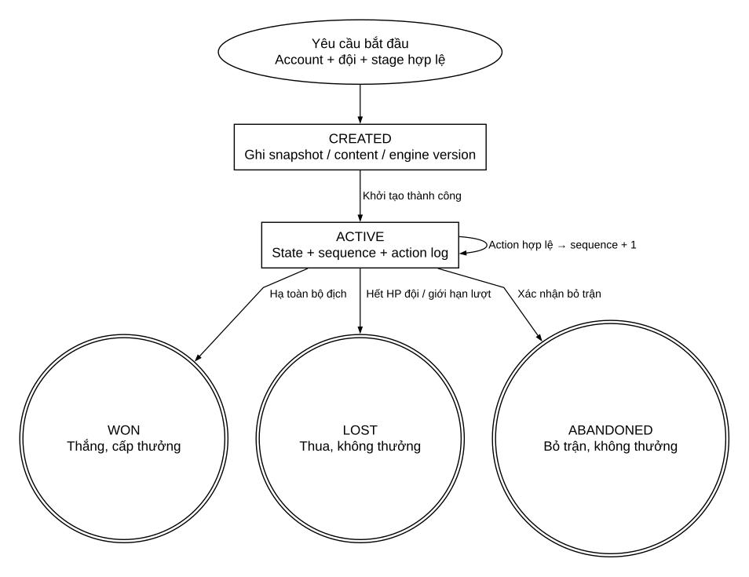

SƠ ĐỒ 08
Vòng đời một trận đấu
Kết quả terminal không nhận thêm hành động gameplay


- Tạo và kích hoạt có thể nằm trong cùng transaction; lỗi khởi tạo rollback, không để CREATED mồ côi.
- Tải lại hoặc mất mạng: vẫn ACTIVE; resume từ state đã commit. Action sai không tạo chuyển trạng thái.
- Trận kết thúc chỉ đọc result/replay. Bấm chơi lại tạo battleId mới; không đưa WON/LOST về ACTIVE.
- Tối đa một Battle CREATED/ACTIVE trên mỗi player; chống start trùng bằng requestId và ràng buộc database.